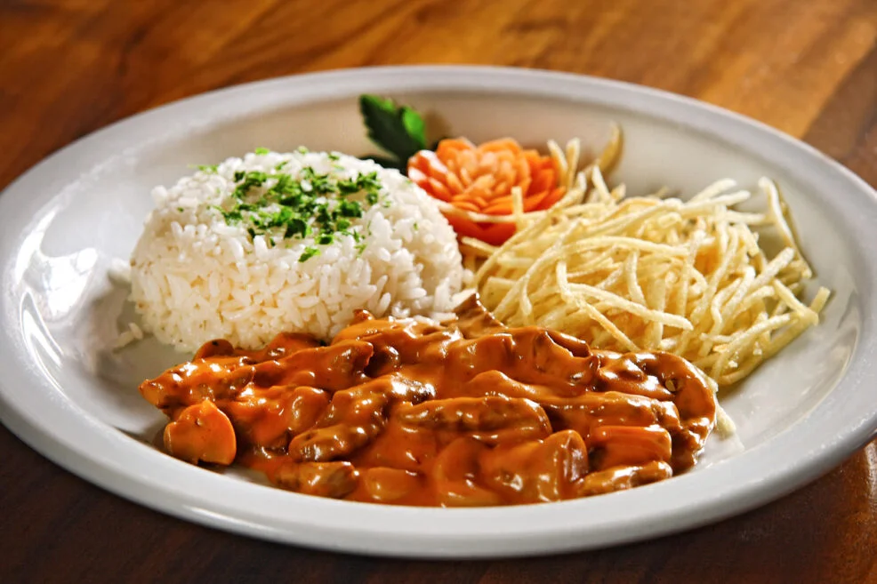

Meu Strogonoff de Carne

Ingredientes
- 500g de filé mignon em tiras
- 2 colheres de sopa de manteiga
- 1 cebola média picada
- 2 dentes de alho picados
- 200g de champignon fatiado
- 1 colher de sopa de molho inglês
- 1 xícara de creme de leite
- 2 colheres de sopa de ketchup
- Sal e pimenta-do-reino a gosto
- Salsinha picada para decorar (opcional)
Modo de Preparo
- Para preparar o strogonoff de filé mignon, comece temperando a carne com sal e pimenta a gosto.
- Em uma frigideira grande, derreta 1 colher de sopa de manteiga em fogo alto.
- Quando estiver bem quente, adicione as tiras de filé mignon e
cozinhe rapidamente, mexendo ocasionalmente, até que estejam douradas,
cerca de 3 a 4 minutos.
- Após dourar, retire a carne da frigideira e reserve.
- Na mesma frigideira, adicione a manteiga restante.
- Em seguida, coloque a cebola picada e o alho,
refogando até que a cebola esteja transparente.
- Adicione os champignons fatiados e
cozinhe por mais alguns minutos, até que estejam macios.
- Volte o filé mignon para a frigideira e adicione o molho inglês e o ketchup.
- Misture bem para incorporar todos os sabores.
- Reduza o fogo e adicione o creme de leite, mexendo até que tudo esteja bem misturado.
- Prove e ajuste o sal e a pimenta a gosto.
- Cozinhe por mais 2 a 3 minutos, tomando cuidado para não deixar ferver, apenas para aquecer.
- Para finalizar, decore com salsinha picada, se desejar. Sirva quente,
acompanhado de arroz branco e batata palha. Aproveite!
Voltar ao topo
Voltar ao menu